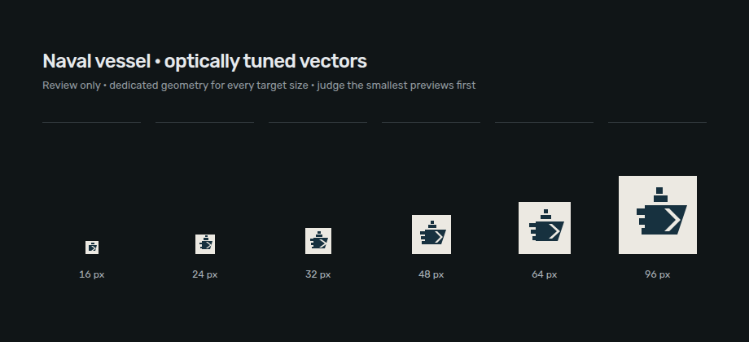
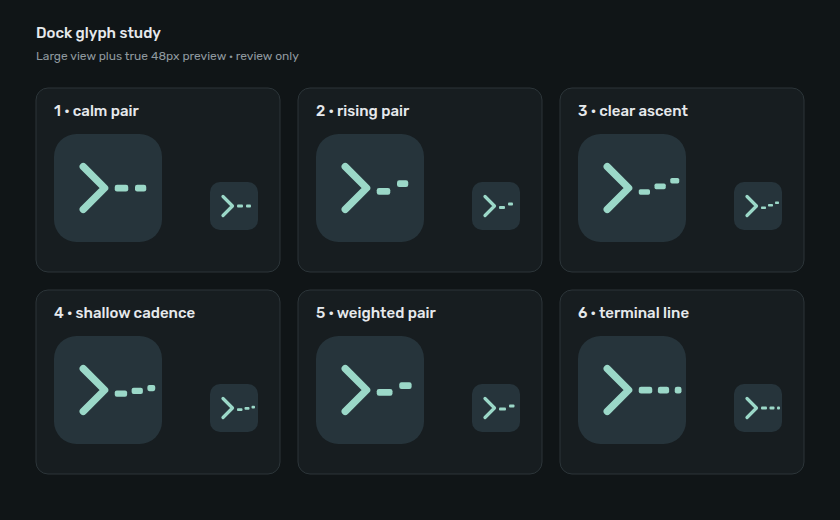
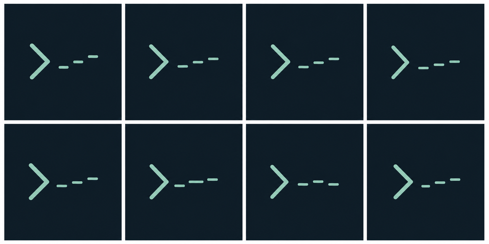
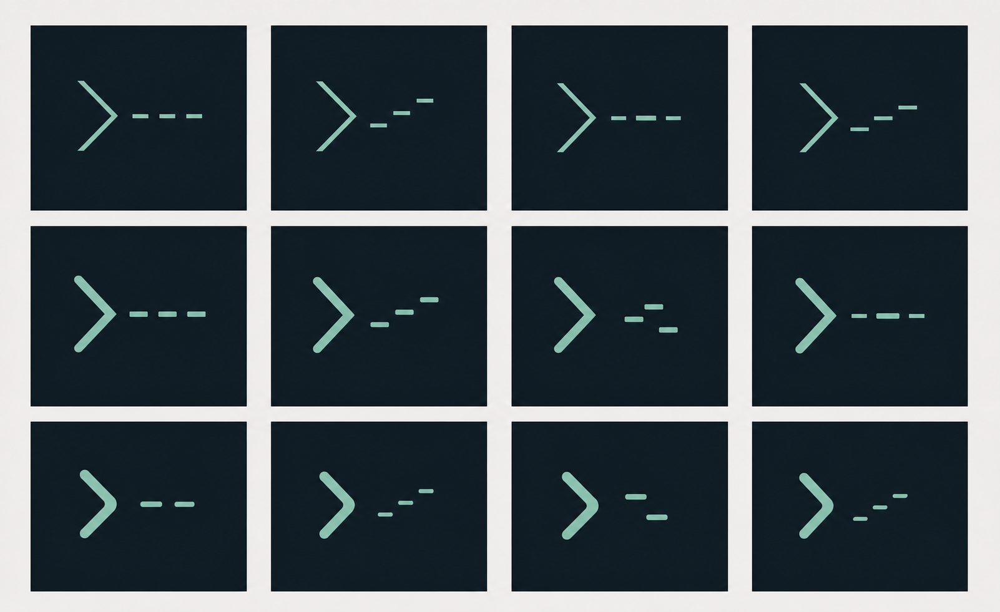
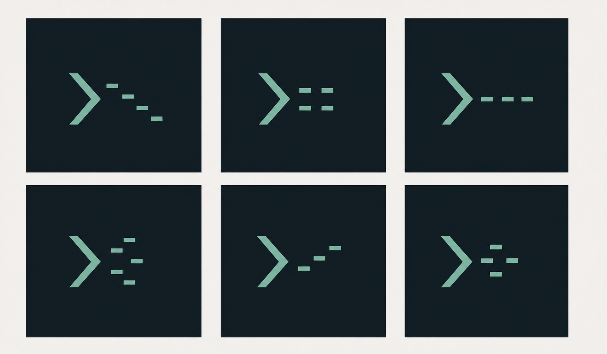
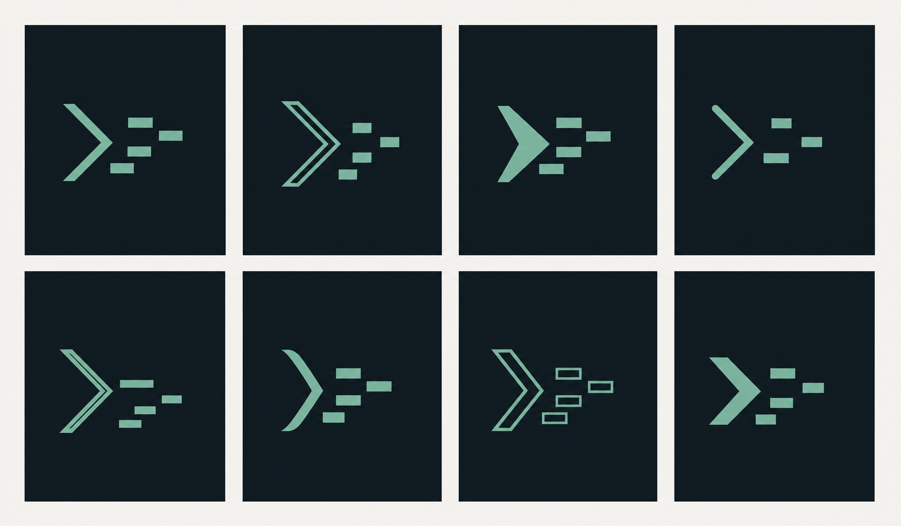
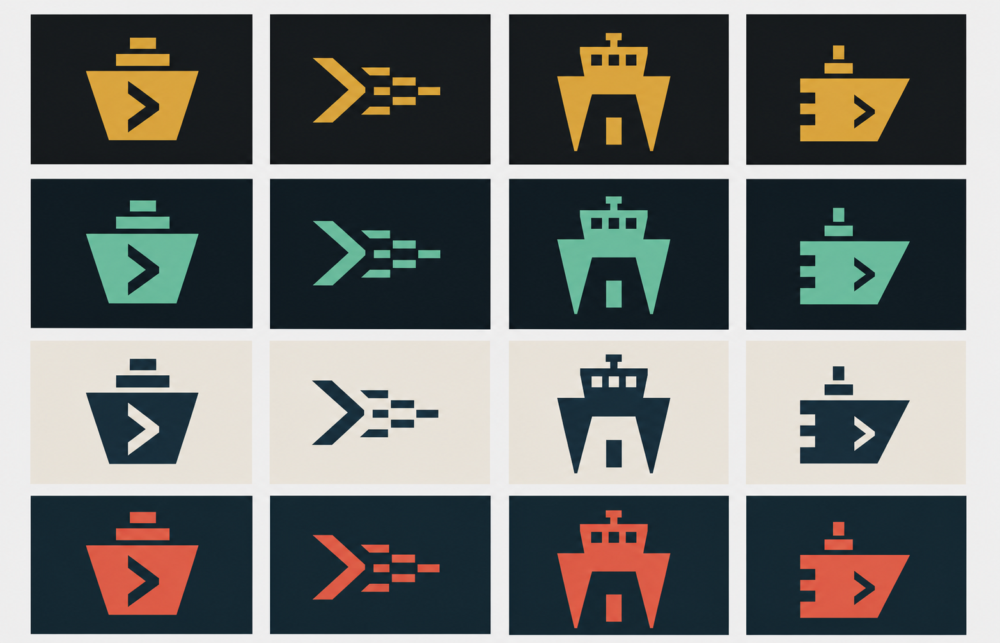
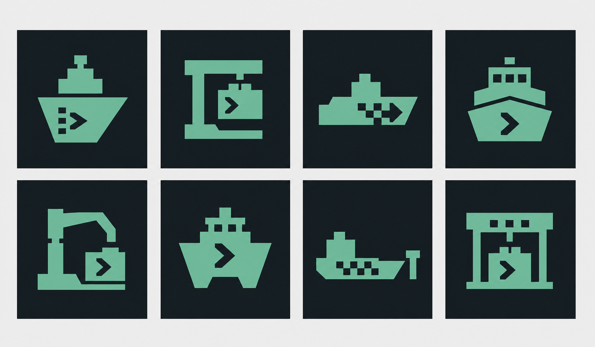
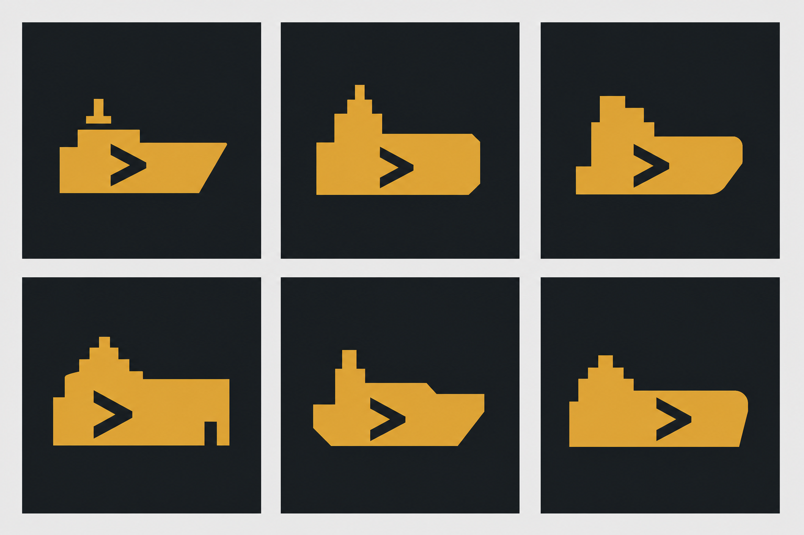
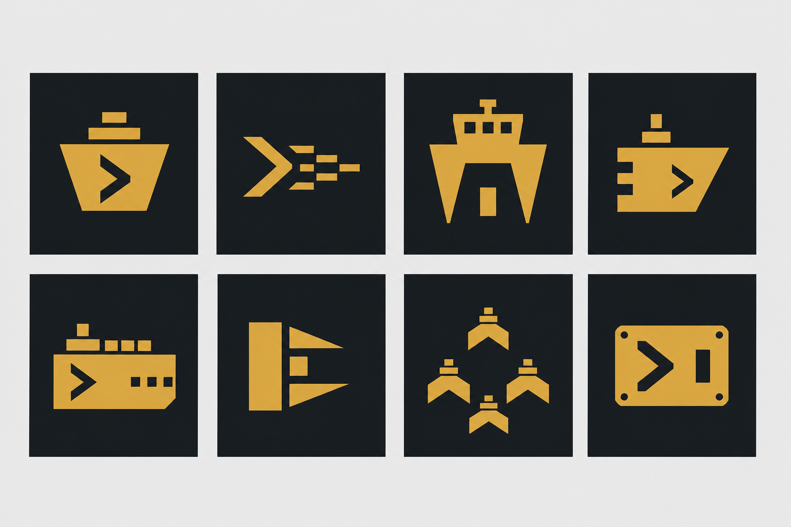

Command Fleet
Sea-glass on blue-black, with no literal boat imagery.
All concept rounds in one place, newest first. Generated sheets are exploratory references, not production artwork.
Eleven exact browser renders from 0–1200ms. Inspect the open-space vessel construction, fixed-weight letter reveal, alignment, and antialiasing in one complete grid.
The selected vessel rebuilt as optically tuned SVG geometry for exact 16, 24, 32, 48, 64, and 96px sizes.

Six deterministic SVG corrections shown enlarged and at their true 48px dock size. Nothing in this round is approved.

Eight unapproved refinements of option 6, varying only corner softness, module rise, spacing, and cadence.

Twelve unapproved refinements: sharp across row one, subtly softened across row two, and visibly softer across row three.

Six unapproved refinements with smaller modules and distinct spacing rhythms. Numbered 1–3 across the top, then 4–6.

Eight earlier refinements of the command-to-fleet idea. None are approved.

An unapproved redraw of one command chevron directing four terminal blocks.
Sea-glass on blue-black, with no literal boat imagery.
The four liked marks compared in amber, sea-glass, bone and naval ink, and signal coral.

Eight new terminal-maritime fusions derived from the four liked marks.

Six refinements of the selected low command-vessel premise. Bottom-middle is candidate 5.

Eight initial identity directions. The top-right mark became the focused premise above.

A deterministic SVG redraw of the generated premise, shown at production sizes.
One connected hull with a terminal prompt cut into the silhouette.
Dockyard stencils designed at favicon scale before the GPT Image exploration.
A heavy cursor plate with a bridge cut. Blunt and mechanical.
The simplest legible tug silhouette, compressed into a cursor.
Prompt and vessel fused into one continuous command mark.